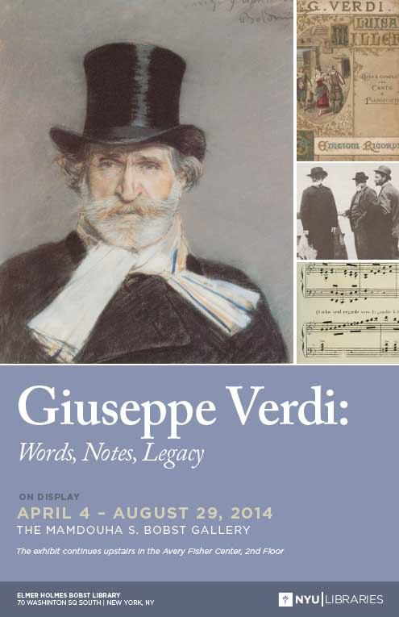

|
|
|
|
Recent Events and MultimediaSome recent events organized by the AIVS are available in video streaming. You may watch them online here or through our Facebook page.Giuseppe Verdi: Words, Notes, Legacy In
October 2013, Giuseppe Verdi turned 200. The exhibit Giuseppe Verdi: Words, Notes, Legacy
paid tribute to Verdi’s legacy exploring scores, librettos,
correspondence, and memorabilia. The journey began in
Milan,where Verdi made his debut in 1839, and explored the composer’s
international success, his relationship with publishers, singers, and
political authorities, his creative process, and his reception in the
new world and in today’s culture. Giuseppe Verdi: Words, Notes, Legacy was on display in the Mandouha S. Bobst Gallery and the Avery Fisher Center, located in the Elmer H. Bobst Library at New York University, 70 Washington Square South, New York. A dedicated web site for Giuseppe Verdi: Words, Notes, Legacy is available here:
Online videos of selected sessions from Verdi's Third Century: Italian Opera Today will be accessible soon through this page.
April 2, 2013, 6:00pm, NYU Casa Italiana Zerilli-Marimò "Discovering Giuseppe Verdi's I lombardi alla prima Crociata" Eve Queler, Founding Director of Opera Orchestra of New York, and AIVS Co-Director Francesco Izzo introduce Giuseppe Verdi’s fourth opera, I lombardi alla prima Crociata, which OONY performed on April 8, 2013 at Avery Fisher Hall, Lincoln Center. The event includes commentary on the opera and selections from I lombardi and I masnadieri performed live by Maestro Queler and artists involved in the OONY performance, including Chiara Taigi (soprano), Diego Silva (tenor), John Viscardi (tenor), Kevin Short (bass), Erica Kiesewetter (violin), Eugene Moye (cello), Elizabeth Mann (flute), and Steve Hartman (clarinet). February 26, 2013, 6:30pm, NYU Casa Italiana Zerilli-Marimò "Adventures in Italian Opera: Verdi and the Italians" For the series "Adventures in Italian Opera," Casa Italiana Zerilli-Marimò hosts soprano Barbara Frittoli, bass Ferruccio Furlanetto, and AIVS co-director, Francesco Izzo in conversation with Fred Plotkin. The discussion, entitled "Verdi and the Italians," explores a wealth of themes and questions pertaining to Verdi performance and scholarship.
|